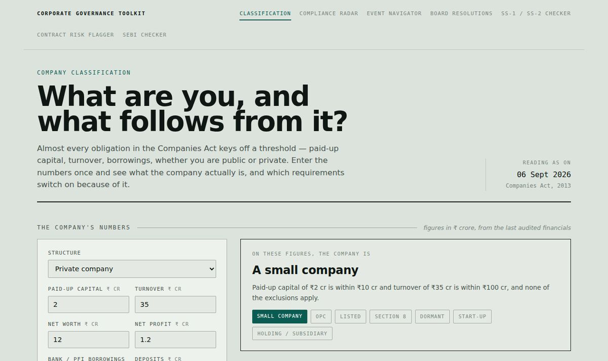
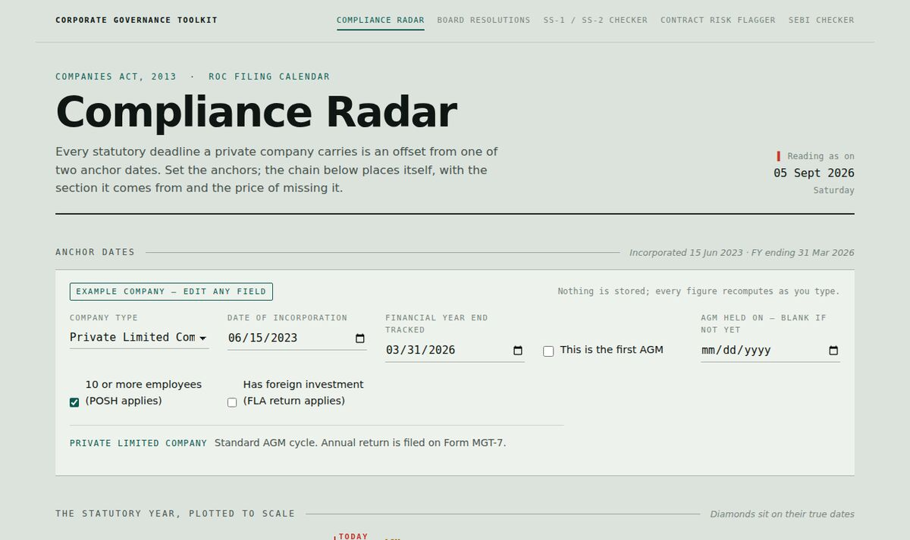
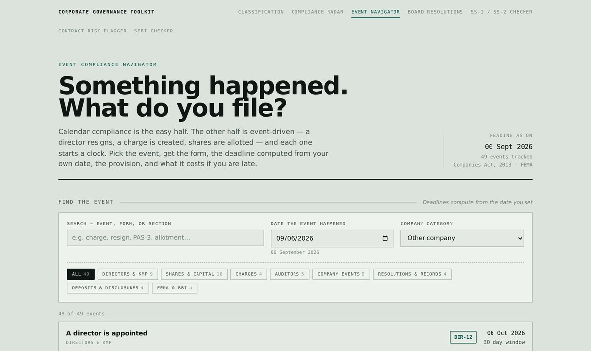
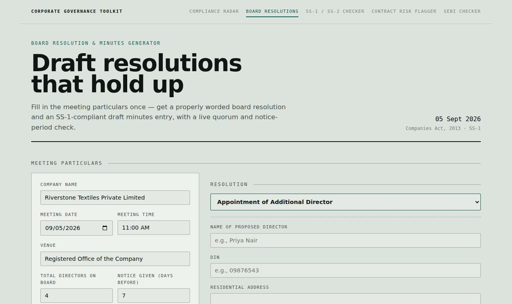
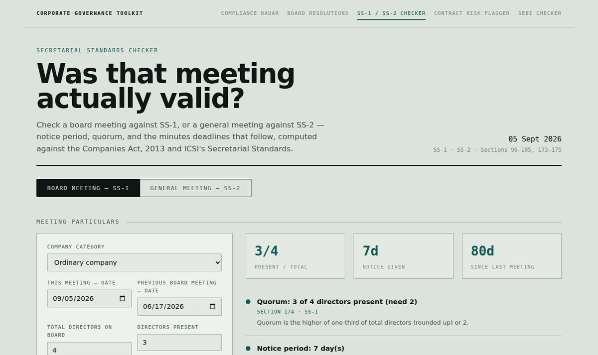
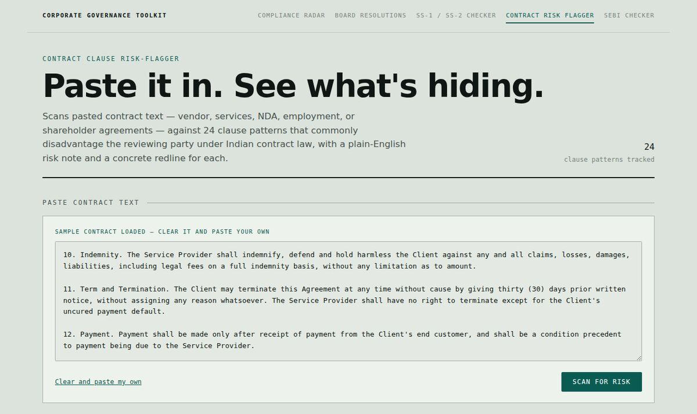
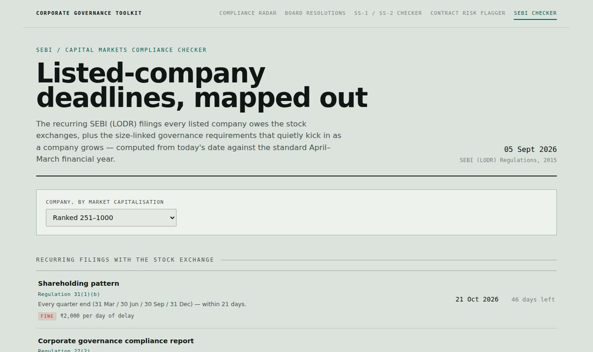

Corporate governance & compliance — a working toolkit
Seven small, real tools built around the Companies Act, 2013, SEBI's Listing Regulations, the Secretarial Standards and FEMA — the statutory ground a Company Secretary actually works on. Each one runs entirely in your browser: no signup, no server, no data leaves the page.

Almost every obligation in the Companies Act keys off a threshold — paid-up capital, turnover, borrowings, public or private. Enter the numbers once and see what the company actually is, and which fourteen requirements switch on or off because of it. The other tools all assume you already know this.
Open tool
Every statutory deadline a private company carries — AGM, ROC filings, POSH, FLA — computed live from two anchor dates: incorporation and financial year end.
Open tool
Something happened — a director resigned, a charge was created, shares were allotted. 49 events mapped to the form, the deadline computed from your date, the provision, and what the delay costs.
Open tool
Twelve common board resolutions — director appointments, RPTs, borrowing powers, bank accounts — drafted with a live Section 174 quorum and notice-period check.
Open tool
Was that meeting actually valid? Checks a board meeting against SS-1, or a general meeting against SS-2 — notice, quorum, and the minutes deadlines that follow.
Open tool
Paste a contract, get back 24 clause patterns that commonly disadvantage the reviewing party under Indian contract law — each with a plain-English risk note and a redline to propose.
Open tool
The recurring SEBI (LODR) filings every listed company owes the exchanges, plus the size-linked governance requirements — BRSR, Risk Management Committee — that kick in as a company grows.
Open toolBBA LLB (Hons.) · CS Executive (pursuing) · Palakkad, Kerala. Open to CS traineeship and corporate compliance roles.
I'm a BBA LLB (Hons.) graduate currently pursuing the CS Executive qualification, aiming for corporate governance and compliance roles. I built this toolkit to work through the statutory material properly — not by reading it, but by encoding the actual logic (quorum formulas, filing deadlines, notice periods, clause-level contract risk) into something that runs and can be checked.
Method
Each tool was implemented with the assistance of an AI coding tool (Claude), under my direction — I set the scope, verified the legal content against the Bare Acts, SEBI circulars and the Secretarial Standards, and made the design and content decisions throughout. Where a rule has a genuine grey area, the tool says so rather than guessing.